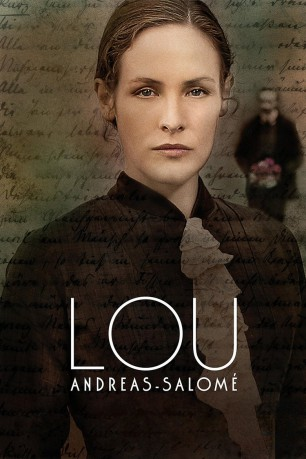
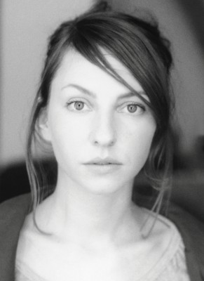
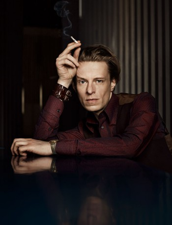
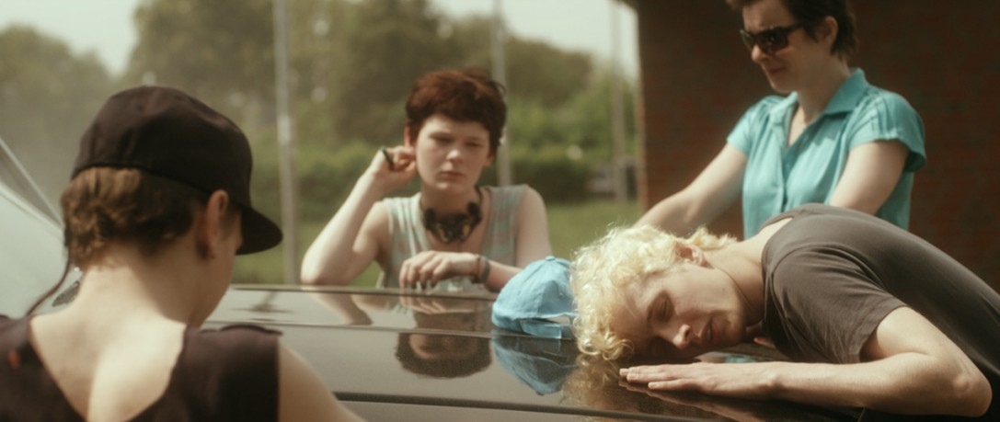
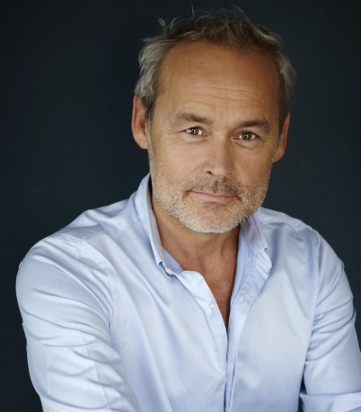

#5729 Lou Andreas-Salomé
 
 IMDB-Wertung: 7.0 / 10
IMDB-Wertung: 7.0 / 10  Metascore: 0
Metascore: 0 
1861 in St. Petersburg geboren, begreift die junge Lou früh, dass sie als Ehefrau und Geliebte in der von Männern bestimmten Welt keine Chance hat, als Ebenbürtige zu bestehen. Der körperlichen Liebe erteilt sie fortan eine entschiedene Absage um als gleichwertig und selbstbestimmt akzeptiert zu werden. Auf ihrem Weg begegnet sie als wissenshungrige Studentin in Rom den Philosophen Paul Rée und Friedrich Nietzsche, die von dieser klugen und uneinnehmbaren Frau so fasziniert sind, dass sie ihr beide einen Heiratsantrag machen – ohne Erfolg. Doch als der junge, damals noch unbekannte Autor Rainer Maria Rilke auf der Bildfläche erscheint und die erfolgreiche Schriftstellerin mit Gedichten umwirbt, verliebt sie sich und wird seine Ratgeberin und Förderin. Im Alter von 50 Jahren lernt sie Sigmund Freud kennen und entdeckt die Psychoanalyse für sich, beeinflusst ihrerseits aber auch den berühmten Analytiker in seinen Theorien.
Jahr: 2016
Dauer: 112 Minuten
FSK: 6
Land: Deutschland Studio: Wild BunchTonspuren:
Untertitel:
Auflösung: 1080p (1920x816) Größe: 5355 MB
Genre: Drama, Liebe, Biographie
Regisseur: Cordula Kablitz-Post
Drehbuch: Chris Henchy
Soundtrack:
Darsteller:
-  Katharina Schüttler als Mariechen
-  Alexander Scheer als Friedrich Nietzsche
-  Julius Feldmeier als Rainer Maria Rilke
 Peter Simonischek als Gustav von Salomé
Peter Simonischek als Gustav von Salomé- Petra Morzé als Mutter von Lou
-  Marcel Hensema als Hendrik Gillot
 Harald Schrott als Sigmund Freud
Harald Schrott als Sigmund Freud- Carl Achleitner als Verleger
- Aaron Karl als Richard Beer-Hofmann
- Nicole Heesters als Lou Andreas-Salomé, 72J.
- Katharina Lorenz als Lou Andreas-Salomé, jung
- Liv Lisa Fries als Lou Andreas-Salomé jung
- Helena Pieske als Lou Andreas-Salomé, 7 Jahre
- Matthias Lier als Ernst Pfeiffer
- Philipp Hauß als Paul Rée
 Merab Ninidze als Friedrich Carl Andreas
Merab Ninidze als Friedrich Carl Andreas- Daniel Sträßer als Dr. Friedrich Pineles
- Magdalena Kronschläger als Frieda von Bülow
- Reinecke Ruth als Malwida von Meysenbug
- Katrin Hansmeier als Elisabeth Nietzsche
- Birte Carolin Sebastian als Greta zu Meysenbug
- Mariel Jana Supka als Marie Apel
- Wladimir Tarasjanz als Russischer Pastor
- Manfred-Anton Algrang als Fotograph
- Leon Ullrich als Polizist
Datei: X:\2016(G-M)\Lou Andreas-Salomé (2016, FSK6, 1920x816).mkv seit 15.03.2017
Festplatte: HD 2016(A-Z)
 Es gibt insgesamt 164 Filme in der Gruppe '2016(G-M)'
Es gibt insgesamt 164 Filme in der Gruppe '2016(G-M)'